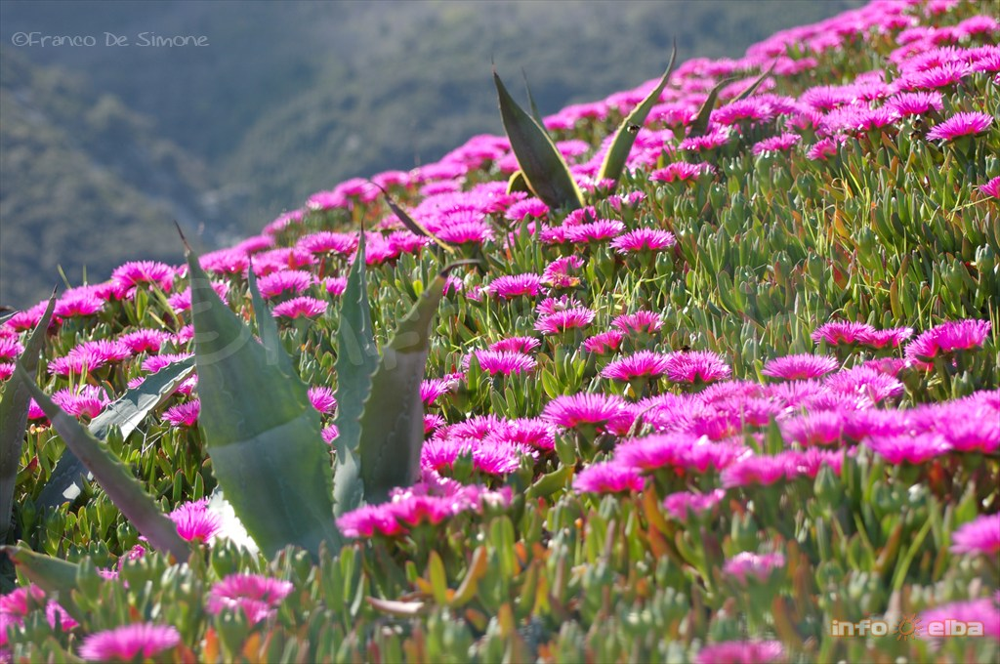
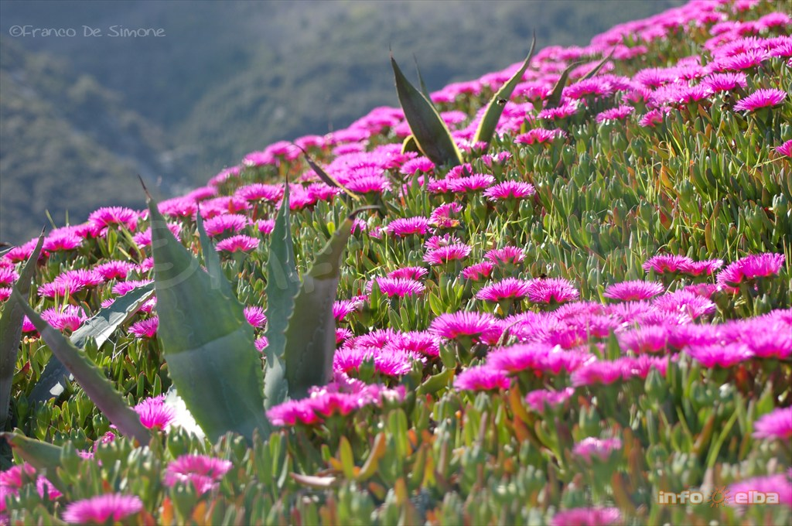

Attività edEsperienze
parchi naturali italiani offrono esperienze uniche per esplorare paesaggi straordinari: trekking panoramici, birdwatching, vulcani attivi e sentieri immersi nella biodiversità di monti e foreste.
Introduzione
I parchi nazionali italiani offrono un’ampia gamma di opportunità per vivere momenti a contatto con la natura, integrando aspetti ricreativi, educativi e culturali. Escursioni e trekking rappresentano spesso la prima scelta: molti itinerari sono mappati e ben segnalati, con diversi gradi di difficoltà, così da soddisfare sia gli appassionati di lunghe camminate sui sentieri alpini o appenninici, sia chi cerca percorsi più dolci fra boschi secolari o tratti costieri panoramici. Lungo il cammino, non è raro imbattersi in centri visita e punti informativi dove guide specializzate forniscono dettagli su flora, fauna e geologia dell’area.


Visite guidate
Per coloro che desiderano un approccio più strutturato, visite guidate e laboratori didattici consentono di approfondire tematiche come la conservazione degli ecosistemi, la storia geologica delle montagne o la tutela di specie in pericolo. Queste attività sono spesso rivolte a scuole, famiglie o gruppi organizzati, con possibilità di sperimentare laboratori di educazione ambientale sul campo o workshop pratici (ad esempio, sul riconoscimento delle tracce animali o sull’orientamento in montagna).


Tipologie di attività associate ai parchi
Escursioni e Trekking Parco Nazionale del Gran Paradiso: Sentieri alpini che attraversano ghiacciai e pascoli, ideali per il trekking d’alta quota. Parco Nazionale d’Abruzzo, Lazio e Molise: Faggete vetuste, percorsi adatti a tutti i livelli e possibilità di avvistare fauna selvatica. Parco Nazionale del Pollino: Itinerari tra vette selvagge, gole e i caratteristici pini loricati. Parco Nazionale delle Dolomiti Bellunesi: Ampia rete di sentieri con panorami spettacolari e rifugi alpini. Parco Nazionale della Sila: Boschi di faggio e pino laricio, percorsi immersi nella natura dell’altopiano. Parco Nazionale delle Foreste Casentinesi, Monte Falterona e Campigna: Foreste secolari, eremi e abbazie raggiungibili a piedi.


Sport all'aria aperta
Sport all’Aria Aperta Arrampicata: Parco Nazionale del Pollino: Pareti rocciose ideali per climber esperti. Parco Nazionale delle Dolomiti Bellunesi: Falesie di diversa difficoltà e vie ferrate. Mountain Bike: Parco Nazionale della Sila: Percorsi sterrati tra boschi e altopiani. Parco Nazionale d’Abruzzo, Lazio e Molise: Sentieri misti fra faggete e borghi. Canoa / Kayak / Snorkeling: Parco Nazionale delle Cinque Terre: Tratti costieri accessibili via mare, piccole cale. Parco Nazionale dell’Arcipelago Toscano: Escursioni in kayak tra calette e fondali ricchi di vita marina. Parco Nazionale dell’Arcipelago di La Maddalena: Acque cristalline ideali per immersioni e snorkeling. Sci e Sport Invernali: Parco Nazionale della Sila: Sci di fondo e ciaspolate in altopiano. Parco Nazionale d’Abruzzo, Lazio e Molise: Possibilità di sci di fondo e ciaspolate in aree boschive.


Birdwatching
Birdwatching Parco Nazionale d’Abruzzo, Lazio e Molise: Rapaci come l’aquila reale, e possibilità di avvistare camosci (non volatili, ma di notevole interesse). Parco Nazionale delle Foreste Casentinesi: Varie specie di uccelli che nidificano in foresta, tra cui picchi e rapaci diurni. Parco Nazionale dell’Arcipelago Toscano: Uccelli marini e migratori, compresi gabbiano corso e falco pellegrino sulle falesie. Parco Nazionale del Cilento, Vallo di Diano e Alburni: Zone umide interne e tratte costiere frequentate da uccelli migratori.protetti.


Siti archeologici e borghi storici
Siti Archeologici e Borghi Storici Parco Nazionale delle Cinque Terre: I caratteristici borghi marinari (Riomaggiore, Manarola, Corniglia, Vernazza, Monterosso). Parco Nazionale del Vesuvio: Vicinanza a siti archeologici come Pompei ed Ercolano (extraparco, ma strettamente correlati). Parco Nazionale dell’Arcipelago Toscano: Isola d’Elba con le residenze napoleoniche, resti romani a Giannutri. Parco Nazionale del Cilento, Vallo di Diano e Alburni: Vicinanza ai siti di Paestum e Velia, ricchi di testimonianze della Magna Grecia. Parco dell’Etna: Paesini etnei con centri storici in pietra lavica, chiese e musei dedicati all’attività vulcanica.
 
